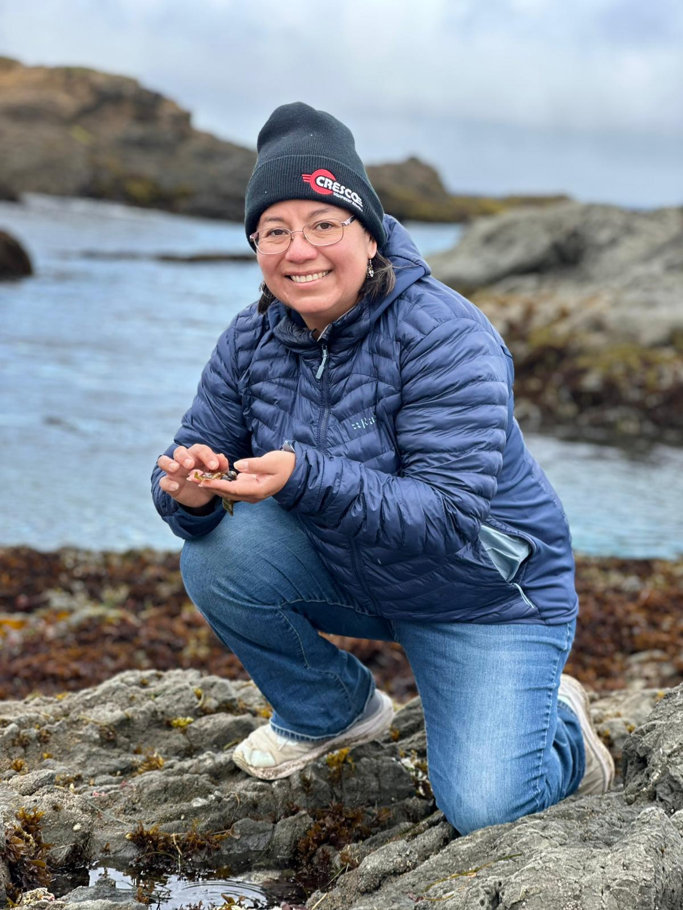

Science and daily actions for a sustainable present and future
Hi! I'm Cristina Torres-Duarte, a researcher at the UC Davis Bodega Marine Laboratory and sustainability enthusiast. I believe that from what we eat to what we buy, every single dialy action counts, and that we can all contribute to a brighter present and future.
